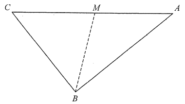

題目
(a) 圖 3(a) 顯示一塊三角形紙卡 $ABC$，其中 $AB=28$ cm、$BC=21$ cm、$AC=35$ cm。設 $M$ 為 $AC$ 上的一點，使 $\angle BMC=75^{\circ}$。求
(i) $\angle BCM$；
(ii) $CM$。
(b) Peter 沿 $BM$ 把紙卡摺起，使 $AB$ 與 $BC$ 位於水平地面上，如圖 3(b) 所示。已知 $\angle AMC=107^{\circ}$。
(i) 求水平地面上 $A$ 與 $C$ 的距離。
(ii) 設 $N$ 為 $BC$ 上的一點，使 $MN$ 垂直於 $BC$。Peter 聲稱面 $BCM$ 與水平地面的夾角為 $\angle ANM$。你是否同意？試解釋。

圖（原卷附圖）
題解
第 1 步
(a)(i) 先證 $\angle ABC=90^{\circ}$，再求 $\angle BCM$
畢氏定理的逆定理
\(a^{2}+b^{2}=c^{2}\ \Longrightarrow\ \angle C=90^{\circ}\)
三邊已知，先檢查是否直角，之後便可直接用直角三角形的比例。
在 $\triangle ABC$ 中：
\[ 21^{2}+28^{2}=441+784=1225=35^{2}, \]
即 $BC^{2}+AB^{2}=AC^{2}$，由畢氏定理的逆定理，$\angle ABC=90^{\circ}$。
因 $M$ 在 $AC$ 上，射線 $CM$ 沿 $CA$，所以
\[ \angle BCM=\angle BCA. \]
在直角三角形 $ABC$ 中，$AB$ 是 $\angle BCA$ 的對邊、$BC$ 是鄰邊：
\[ \tan\angle BCA=\frac{AB}{BC}=\frac{28}{21}\quad\Longrightarrow\quad \angle BCA\approx53.1301^{\circ}. \]
故 $\angle BCM\approx53.1^{\circ}$。
第 2 步
(a)(ii) 在 $\triangle BMC$ 中用正弦公式求 $CM$
正弦公式
\(\dfrac{a}{\sin A}=\dfrac{b}{\sin B}=\dfrac{c}{\sin C}\)
$\triangle BMC$ 已知一邊（$BC=21$）與兩個角，正是正弦公式的適用情況。
在 $\triangle BMC$ 中，$\angle BMC=75^{\circ}$、$\angle BCM\approx53.1301^{\circ}$，故
\[ \angle MBC=180^{\circ}-75^{\circ}-53.1301^{\circ}=51.8699^{\circ}. \]
由正弦公式：
\[ \frac{CM}{\sin\angle MBC}=\frac{BC}{\sin\angle BMC} \]
\[ CM=\frac{21\sin51.8699^{\circ}}{\sin75^{\circ}}\approx\frac{21\times0.7866}{0.9659}\approx17.1. \]
所以 $CM\approx17.1$ cm。
順便記下 $AM=AC-CM\approx35-17.1015=17.8985$ cm，摺起後仍不變。
第 3 步
(b) 用餘弦公式求地面上的 $AC$，再檢驗 $AN$ 是否垂直 $BC$
餘弦公式
\(c^{2}=a^{2}+b^{2}-2ab\cos C\)
摺起後 $\triangle AMC$ 已知兩邊 $AM$、$CM$ 及夾角 $\angle AMC$，可用餘弦公式求第三邊。
(b)(i) 摺起後 $AM$、$CM$ 的長度不變，
而 $\angle AMC$ 在水平地面上為 $107^{\circ}$：
\[ AC^{2}=AM^{2}+CM^{2}-2(AM)(CM)\cos107^{\circ} \]
\[ \approx320.4+292.5+179.0\approx791.9, \]
故地面上 $AC\approx28.1$ cm。
（因 $\cos107^{\circ}<0$，最後一項為正。
）
(b)(ii) 在水平地面的 $\triangle ABC$ 中（$AB=28$、$BC=21$、$AC\approx28.139$）：
\[ \cos\angle ACB=\frac{21^{2}+28.139^{2}-28^{2}}{2(21)(28.139)}\quad\Longrightarrow\quad \angle ACB\approx67.68^{\circ}. \]
再由直角三角形 $MCN$ 得 $CN=CM\cos\angle BCM\approx17.1015\times0.6\approx10.26$ cm。
在 $\triangle ACN$ 中先求 $AN\approx26.0$ cm，再算
\[ \cos\angle ANC\approx\frac{26.0^{2}+10.26^{2}-28.139^{2}}{2(26.0)(10.26)}\approx-0.017, \]
得 $\angle ANC\approx90.9^{\circ}\neq90^{\circ}$，
即 $AN$ 不垂直於 $BC$。
面 $BCM$ 與地面的夾角要用 $MN$ 與「$MN$ 在地面上的投影」所成的角；
該投影是過 $N$ 且垂直 $BC$ 的地面直線。
只有當 $AN\perp BC$ 時 $AN$ 才代表這個方向，現在並不成立，所以 $\angle ANM$ 不是該夾角。
Peter 的聲稱錯誤 —— 不同意。
答案(a)(i) $\angle BCM\approx53.1^{\circ}$；
(ii) $CM\approx17.1$ cm (b)(i) $AC\approx28.1$ cm；
(ii) 不同意：$\angle ANC\approx90.9^{\circ}\neq90^{\circ}$，$AN$ 不垂直 $BC$，故 $\angle ANM$ 不是面 $BCM$ 與地面的夾角。